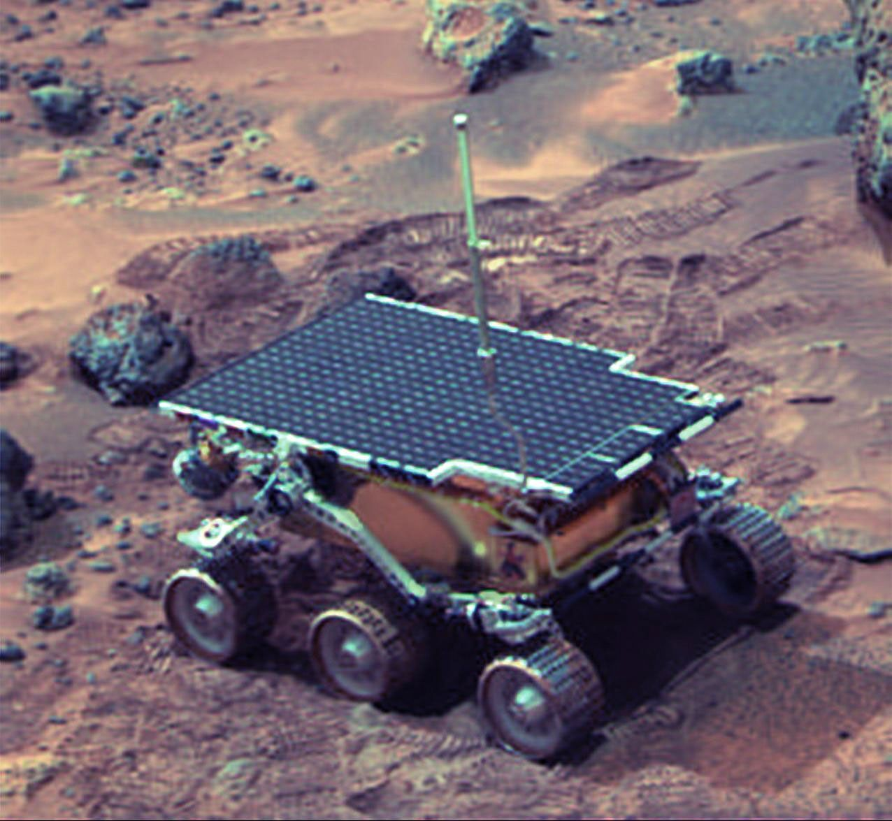
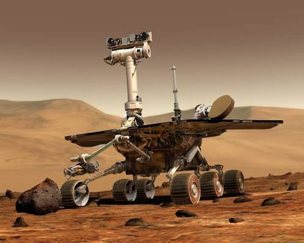
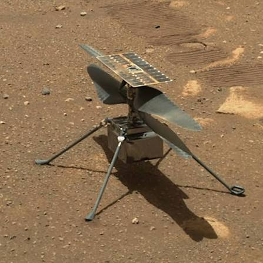
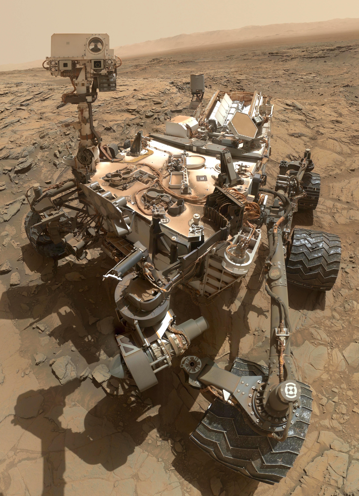

Sojourner (1997)
SilentSojourner was a tiny rover about the size of a microwave oven. It was planned to work for 7 Martian days, but it kept going for 83.
Science it made possible: It studied Martian rocks and showed that small rovers can explore another planet.
Where is it now? Still on Mars, next to its lander. NASA last heard from it in September 1997.
NASA source: NASA Science: Mars Pathfinder
Image: NASA

Spirit (2004)
SilentSpirit landed in Gusev Crater in January 2004. It was planned for 90 days but worked for about six years, until it got stuck in soft sand.
Science it made possible: It found soil rich in silica, a sign of hot water or steam long ago on Mars.
Where is it now? Still in Gusev Crater. NASA lost contact with it in 2010.
NASA source: NASA Science: Spirit rover
Image: NASA

Opportunity (2004)
SilentOpportunity landed in January 2004 and was planned for 90 days. It worked for almost 15 years and drove more than 45 km, which is longer than a marathon.
Science it made possible: It found small round pebbles nicknamed "blueberries", which proved water once soaked the rocks of Mars.
Where is it now? On the plain called Meridiani Planum. A huge dust storm cut its power in 2018, and the mission ended in 2019.
NASA source: NASA Science: Spirit and Opportunity
Image: NASA

Ingenuity
SilentIngenuity was a small helicopter that rode to Mars with the Perseverance rover. In April 2021 it made the first powered flight on another planet. It was planned for 5 flights but flew 72 times.
Science it made possible: It proved that flying is possible in Mars's very thin air. Future helicopters could scout ahead of rovers.
Where is it now? In Jezero Crater. Its mission ended in January 2024 after its rotor blades were damaged.
NASA source: NASA Science: Ingenuity Mars Helicopter
Image: NASA

Curiosity (2012)
Still workingCuriosity is a car-sized rover that landed in Gale Crater in August 2012. It was planned for 2 Earth years, but it is still exploring after more than 14 years.
Science it made possible: It found that Gale Crater once had a lake with the ingredients life needs.
Where is it now? Climbing the slopes of Mount Sharp, a tall mountain inside Gale Crater.
NASA source: NASA Science: Curiosity rover
Image: NASA